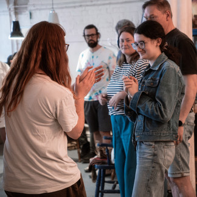
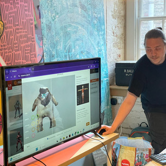
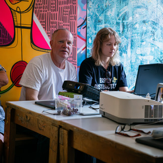
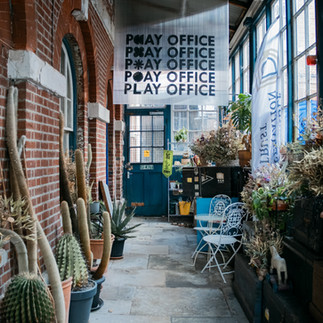
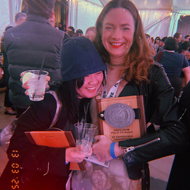
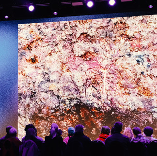
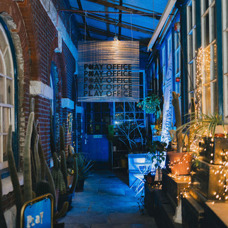

Resonate (ii) — Touring Open Studio: XR and Heritage
Play Office travels to Cairo to present Resonate II at Medrar for Contemporary Art.
Read More →AlterCare: A Worldbuilding Workshop with Beirut Art Centre
An XR workshop at Beirut Art Centre exploring ecologies, worldbuilding, and emerging technologies.
Read More →In Touch, In Ruin — Aspex
The Resonate (ii) exhibition at Aspex Portsmouth, featuring Hannah Buckingham, Harry Payne, and James Wylie.
Read More →Resonate (ii) — Hannah Mae Buckingham
Hannah Mae Buckingham reflects on her process and the making of her Resonate (ii) work.
Read More →
Puppetry & XR Theatre Making with Phoebe Hyder
Blending traditional puppetry craft with XR technologies in a collaborative theatre-making workshop.
Read More →
Clay, Photogrammetry & Animation
A hands-on workshop exploring 3D scanning clay sculptures and bringing them to life through animation.
Read More →
Touch Designer + Projection Mapping
A sold-out workshop exploring audio-reactive visuals and projection mapping with TouchDesigner.
Read More →
Open Brush Modelling with Tom Ward
Exploring VR painting and 3D modelling using Open Brush in an immersive workshop led by Tom Ward.
Read More →
SXSW — Sharing Play Office with Austin, Texas
Taking Play Office to South by Southwest and introducing the project to an international audience.
Read More →
What We Learnt at Past Makes Future 2025
Reflections on a bold conference exploring heritage, technology, and Portsmouth's creative future.
Read More →
Digital Sculpting & AR Workshop with Livi Wilmore
Browser-based 3D modelling and augmented reality with artist Livi Wilmore.
Read More →Past Makes Future 2025 — Announcement
An international conference exploring art, heritage, and emerging technologies at Portsmouth Guildhall.
Read More →Resonate (i)
The first Resonate artist development programme — five groups of artists exploring memory through emerging technologies.
Read More →Bringing “Nazar” to Cairo — Lara Kobeissi at D-CAF
Supporting Resonate artist Lara Kobeissi as she brings her multisensory performance to Cairo.
Read More →
We're Launched — Thank You!
Celebrating the opening of Play Office with MP Stephen Morgan, Council Leader Steve Pitt, and the Portsmouth community.
Read More →